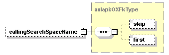

| diagram | |||
| namespace | http://www.cisco.com/AXL/API/10.5 | ||
| children | callingSearchSpaceName | ||
| used by |
|
||
| source | <xsd:complexType name="OXCallForwardNoCoverage"> <xsd:sequence minOccurs="0"> <xsd:element name="callingSearchSpaceName" type="axlapi:OXFkType" minOccurs="0" maxOccurs="1"/> </xsd:sequence> </xsd:complexType> |
| diagram |  | ||||||
| type | axlapi:OXFkType | ||||||
| properties |
|
||||||
| children | skip first | ||||||
| source | <xsd:element name="callingSearchSpaceName" type="axlapi:OXFkType" minOccurs="0" maxOccurs="1"/> |